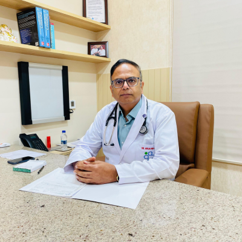
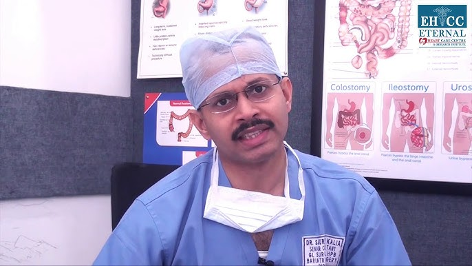

Login to Continue

Why Choose Us?
Expert Faculty
Our team comprises experienced educators and subject matter experts who are dedicated to delivering high-quality education across various disciplines.
Modern Learning Facilities
We utilize state-of-the-art classrooms, labs, and digital tools to enhance the learning experience and support academic success.
Personalized Student Support
We provide individualized guidance and mentorship to help each student thrive academically and personally.
Specialized Academic Programs
Our institution offers a range of specialized programs tailored to meet diverse interests and career goals, ensuring relevant and focused learning paths.
Join Our Alumni community
The college boasts of successful Alumni of all categories of professional. These range from politicians, Lawyers, Engineers, Businessmen, Doctors, Accountants, Administrators, Religious leaders, The presence of these Alumni tell the success story at Bishop Angelo Tarantino Memorial Secondary School.
Our Departments


College Facilities


Your Trusted Center for Quality Education and Academic Excellence
Kalia Institute of Learning is the first and only NABH-accredited educational institute in Fort Portal offering specialized programs in academic development and career readiness. We provide state-of-the-art facilities and a dedicated team of expert educators and staff. Join the best institute in Punjab for exceptional learning and holistic growth.
Personalized Learning Experience
At Kalia Institute of Learning, we provide personalized education tailored to each student’s unique strengths and goals. Our dedicated faculty and support staff are available to guide learners every step of the way, ensuring a nurturing environment that promotes academic success and personal growth.
Latest and Advanced Learning Tools
We utilize the latest educational technology and innovative teaching methods to deliver effective, engaging, and future-ready learning experiences. Our state-of-the-art classrooms and digital resources ensure students receive a high-quality education with practical skills for real-world success.
Meet Our Team
Bishop Angelo Tarantino Memorial Secondary School
ONDOGA CHARLES
HEADMASTERRegn. No. 25633
Head teacher's message
I take this honor to welcome you to this School website which has been created to inform, to receive information from stakeholders and to interact with visitors. This website will again help you link up with our ever-growing alumni to be able to get opportunities of networking in areas of interest. We encourage our visitors to give us feedback to enable us to improve services better for our clients. Your opinions are very much valued and welcome. I thank the team that is keeping the website active and continuously improving it. At Bishop Angelo Tarantino Memorial Secondary School, we say “Primus Inter Pares” as our motto in Latin meaning “First Among Equals” as we strive to go to the top. We hope what you have seen on the website will drive you to physically visit the School.
Bishop Angelo Tarantino Memorial Secondary School
Dr. (Mrs.) Jyoti Kalia
M.B.B.S
BOARD OF GOVERNORS
Bishop Angelo Tarantino Memorial Secondary School
The School Management is headed by the Board Of Governors, the supreme policy making body which has 12 members. The Parent Teachers Association, The Foundation Body and Old Boys Association provide important advisory roles to the School administration. The Administration of the School is mainly guided by the 1995 constitution, education (pre-primary, primary and post-primary) Act 2008, regulations and other laws and regulations issued from time to time
What Our Alumni Say
Drama/Theatre Room
For performing arts, drama practice, and school events.
Sports Grounds
Fields for football, cricket, athletics, and other outdoor games.
Qualified teachers
Qualified teachers dedicated to your learning and comfort.
Get Your Admission
The School boasts of successful Alumni of all categories of professionals. These include; politicians, Lawyers, Engineers, Businessmen, Doctors, Accountants, Administrators, Religious leaders, The presence of these Alumni tell the success story at Bishop Angelo Tarantino Memorial Secondary School.
💬 WhatsApp 📅 Apply OnlineFind Us
About Us
We are dedicated to delivering high-quality and student-centered health education services. Our facility is equipped with modern medical resources and staffed by knowledgeable and supportive professionals to promote well-being and learning.